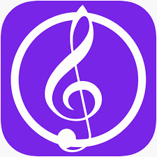
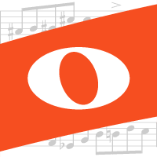

1. Sibelius
A Sibelius az egyik legismertebb és legszélesebb körben használt kottaszerkesztő program, amelyet profi zeneszerzők és hangszerelők kedvelnek.
Nagyon részletes és sokoldalú funkciókkal rendelkezik, amelyek lehetővé teszik a bonyolult zenei művek megalkotását és nyomtatását.
A program különböző szintű verziókkal érhető el, így kezdők és haladók is megtalálják a nekik megfelelőt.
Integrálható más szoftverekkel, mint például a Pro Tools, ami egyszerűsíti a zenei projektek menedzselését.
Kiváló minőségű nyomtatási lehetőségeket biztosít, így a kész kották professzionális megjelenést kapnak.
2. Finale
A Finale a zeneszerzés egyik legnagyobb múltú szoftvere, amelyet leginkább rugalmasságáról és sokoldalúságáról ismernek.
Lehetővé teszi az egyedi kottázási stílusok és formátumok létrehozását, ami különösen hasznos a komplex, több szólamos művekhez.
Számos zenei jelölést és hangszerelési lehetőséget kínál, így minden zenei igényt kielégít.
A program fejlett exportálási és nyomtatási opciókat biztosít, így bármilyen zenei projektet egyszerűen kinyomtathatunk vagy digitális formátumban menthetünk el.
Kompatibilis más zenei szoftverekkel és MIDI eszközökkel, ami ideálissá teszi profi felhasználók számára.
3. MuseScore
A MuseScore egy ingyenes, nyílt forráskódú kottaszerkesztő, amely sok alapvető és haladó funkciót biztosít a zeneszerzéshez.
Egyszerű felülettel rendelkezik, amely megkönnyíti a tanulást kezdők számára, ugyanakkor megfelelő eszközöket nyújt a haladók számára is.
Aktív felhasználói közösséggel és online platformmal rendelkezik, ahol a felhasználók megoszthatják kottáikat és ötleteiket.
A program támogatja az összes fontos fájlformátumot, így a kotta importálása és exportálása könnyen megoldható.
A MuseScore folyamatosan fejlődik a közösség támogatásával, így mindig új funkciókkal és javításokkal gazdagodik.
4. Dorico
A Dorico egy viszonylag új kottaszerkesztő, amelyet a Steinberg fejlesztett ki a modern zenei igényekre szabva.
Különlegessége, hogy rendkívül intuitív kezelőfelülettel rendelkezik, így gyorsan megtanulható és könnyen használható.
Nagy hangsúlyt fektet a hangminőségre, ezért beépített hangszintetizátorai és hangszerelési lehetőségei kiemelkedőek.
A Dorico olyan funkciókkal rendelkezik, amelyek megkönnyítik a hangszerelést és a zenei jelölések alkalmazását.
Kiváló választás mind zenetanárok, mind professzionális zeneszerzők számára, akik prémium minőségű kottát szeretnének készíteni.

5. Noteflight
A Noteflight egy böngészőben futó kottaszerkesztő program, amely ideális online kollaborációra és megosztásra.
Az egyszerű felületének köszönhetően gyorsan elsajátítható, és bárhol elérhető, ahol van internetkapcsolat.
A felhasználók létrehozhatnak, szerkeszthetnek és megoszthatnak kottákat közvetlenül a böngészőből, ami nagyon praktikus.
Ingyenes és prémium változata is elérhető, az utóbbi pedig még több eszközt kínál a haladó felhasználók számára.
A Noteflight kiváló választás diákoknak, tanároknak és hobbi zenészeknek, akik egyszerű, online kottaszerkesztő eszközt keresnek.